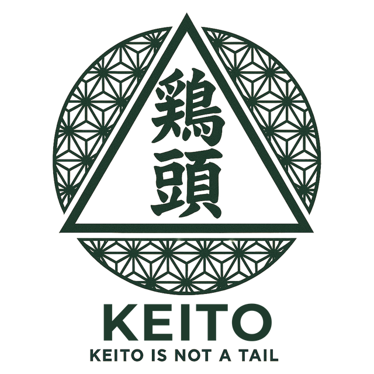

代表について
KEITO
現場の仕事から経営の立場までを経験し、2025年に独立しました。人のつながりから仕事を生み、手間は仕組みで減らす。そのために、自分の事業でもAIを毎日使っています。

名前の由来
牛尾たるより、鶏頭たれ。
KEITO は「鶏頭（けいとう）」から来た名前です。大きなもののしっぽでいるより、小さくても自分が頭になって舵を握る。ロゴの「KEITO IS NOT A TAIL」も同じ意味です。世界で仕事をするために、表記はローマ字の KEITO にしています。
「人生もビジネスも、自分で舵を握れる人を増やしたい」。その想いで仕事をしています。あなたの挑戦を応援し、道を一緒に切りひらく相棒になります。
営業代行・紹介
商品やサービスを、必要としている相手に直接届けます。省エネ設備、食品の卸、中古車の業者販売などを扱ってきました。報酬と条件は、始める前に書面で取り決めます。
ブルーベリー農園 準備中
元田んぼを畑にして、ブルーベリーの木のオーナーを募る農園を準備しています。オーナーには収穫した実をお届けし、収穫体験にもお越しいただけます。案内ができしだい、ご希望の方にお知らせします。
オンラインショップ
オリジナルデザインのグッズを扱うお店を開いています。
事業者情報
概要
- 屋号
- KEITO（ケイト／鶏頭）
- 代表
- KEITO
- 所在地
- 福岡県みやま市（活動の範囲は九州全域と海外）
- 事業
- AI事務サポート、翻訳・語学、イベント企画運営、日本とウズベキスタンの交流・視察・貿易の手配、営業代行、オンラインショップ
- 請求書
- 適格請求書発行事業者（インボイス制度に登録）